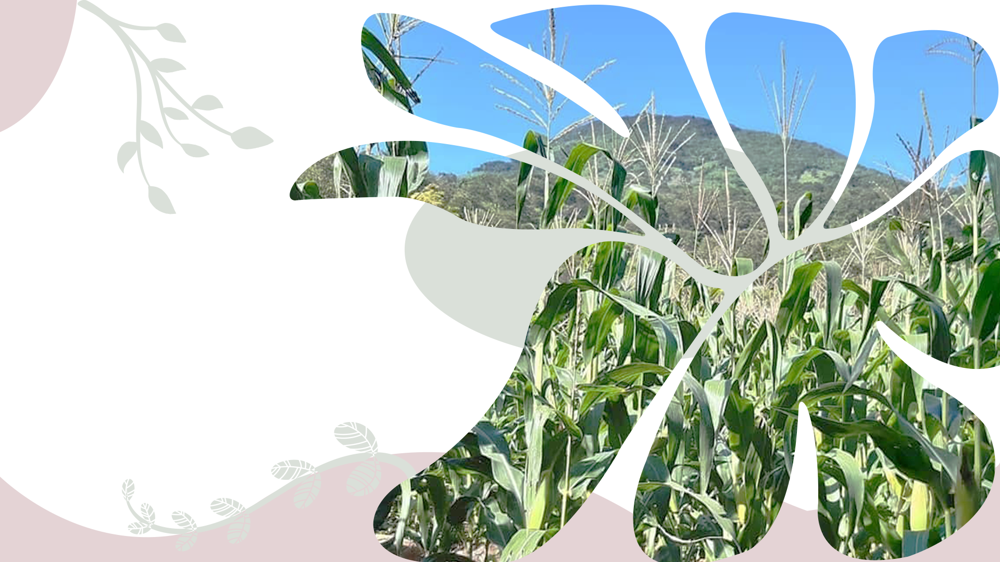

Conoce nuestros orígenes, el territorio
que nos inspira y el camino que
hemos recorrido para construir
desarrollo sostenible.
El territorio que comprende Alta Verapaz, Baja Verapaz
y el municipio de Ixcán es rico en diversidad cultural
y biológica. En estas tierras conviven pueblos q´eqchís,
k´iche´, poqomchís, achís, hispanoparlantes y
mestizos, guardianes de saberes, tradiciones y formas
de vida profundamente conectadas con la naturaleza.
Desde 2006, junto con decenas de organizaciones
locales y regionales, impulsamos un proceso
participativo para comprender los principales desafíos
del territorio y definir prioridades comunes.
A través de diagnósticos participativos, construimos una
visión compartida y elaboramos Planes de Acción Local
y un Plan de Acción Regional (PAR) que orientan el
trabajo conjunto por el desarrollo sostenible, el cuidado
del ambiente y el bienestar de las comunidades.

Año de inicio del
proceso participativo.

Realizados con actores
del territorio.

Un territorio,
una sisión compartida.